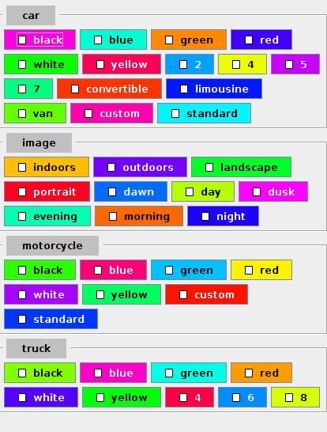
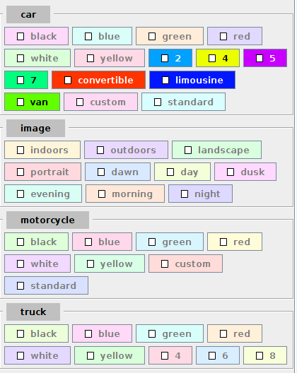
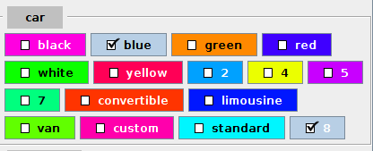
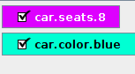

Komponente zur Verwaltung von Tags

Ich habe eine Komponente erstellt, die die GUI für die Verwaltung von Tags darstellen könnte. Damit wäre etwa eine Möglichkeit geschaffen, eine komfortable Anwendung zur Verwaltung Tag-basierter Dateisysteme zu erstellen
Ich ging hier zunächst von einer formalen Annahme über Tags aus: Jedes Tag besteht aus drei Teilen: der erste beschreibt das Konzpt, der zweite Eigenschaften eines Konzepts und der dritte Ausprägungen einer Eigenschaft. Um im TagManager verwaltet werden zu können, werden diese als Strings definiert die aus den drei beschriebenen Teilen bestehen, wobei die Teile durch Punkte getrennt sind. Der erste Teil wird speziell interpretiert: Zur Abkürzung können Konzepte, die die gleichen Eigenschaften aufweisen, zusammengefasst werden. Dann werden die Konzepte mittels senkrechter Striche getrennt. Ein Beispiel für eine Menge von Tags oder Kategorien zur Verwaltung mittels des TagManager könnte wie folgt aussehen:
LinkedList<String> c=new LinkedList();
c.add("image.timeofday.morning");
c.add("image.timeofday.evening");
c.add("image.timeofday.dusk");
c.add("image.timeofday.dawn");
c.add("image.timeofday.day");
c.add("image.timeofday.night");
c.add("image.location.outdoors");
c.add("image.location.indoors");
c.add("image.orientation.landscape|portrait");
c.add("car|motorcycle|truck.color.black");
c.add("car|motorcycle|truck.color.blue");
c.add("car|motorcycle|truck.color.green");
c.add("car|motorcycle|truck.color.red");
c.add("car|motorcycle|truck.color.yellow");
c.add("car|motorcycle|truck.color.white");
c.add("car.style.convertible");
c.add("car.style.limousine");
c.add("car.style.van");
c.add("car.seats.2");
c.add("car.seats.4");
c.add("car.seats.5");
c.add("car.seats.7");
c.add("car|motorcycle.tuneup.standard");
c.add("car|motorcycle.tuneup.custom");
Der TagManager erstellt daraus Buttons, die angeklickt werden können, um zum Beispiel einem Bild die entsprechenden Tags oder Kategorien zuzuweisen. Dabei werden die Buttons nach Konzepten gruppiert. Die Eigenschaften werden nicht explizit angegeben - sie sind nur über die Tooltips einzusehen:

Tag-Buttons Ebenfalls Teil des TagManger ist ein Texteingabefeld, das eine Autovervollständigung anbietet. Die Eingabe geschieht wie oben beschrieben: Konzept.Eigenschaft.Ausprägung. Während der Anwender im Texteingabefeld schreibt werden automatisch die Knöpfe in der oben beschriebenen Komponente angepasst: alle, die nicht mehr auf den bereits eingegebenen Text passen, werden visuell ein wenig zurückhaltender dargestellt. Enthält das Texteingabefeld etwa bereits car.s, ergibt sich folgendes Bild
Tag-Buttons gefiltert Wann immer ein Tag-Button gedrückt wird oder der Anwender im Texteingabefeld Enter betätigt, wird der Tag selektiert. Geschieht das durch Enter im Texteingabefeld und existierte der Tag bisher noch nicht, wird ein neuer Button hinzugefügt (im Beispiel wurde im Textfeld car.seats.8 eingegeben und der Tag-Button "blue" in car betätigt).
Selektierte Tag-Buttons Gleichzeitig werden alle selektierten Tags - diesmal mit vollständigem Text und ohne Gruppierung als Liste angezeigt:
Selektierte Tags Tags kann man wieder entfernen, indem man entweder auf einen der Tag-Buttons drückt oder auf den entsprechenden Knopf in dieser Liste. 


Vor 5 Jahren hier im Blog
-
Another Round of Trac
02.09.2017
Ich habe nach nunmehr über 5000 Tickets in meinem privaten Ticket-Management-System darüber nachgedacht, wie ich es weiter verbessern und noch nahtloser damit arbeiten kann. Mein Hauptanliegen war, die Reihenfolge der Abarbeitung der Tickets auf einfache Art und Weise festlegen zu können
Weiterlesen...
Tags
Android Basteln C und C++ Chaos Datenbanken Docker dWb+ ESP Wifi Garten Geo Git(lab|hub) Go GUI Gui Hardware Java Jupyter Komponenten Links Linux Markdown Markup Music Numerik PKI-X.509-CA Python QBrowser Rants Raspi Revisited Security Software-Test sQLshell TeleGrafana Verschiedenes Video Virtualisierung Windows Upcoming...
Neueste Artikel
- Bessere XPath-Suche im XML-Editor
Ich habe den unter anderem im XPathLab eingesetzten Editor für XML-Dokumente um neue Funktionalitäten erweitert
Weiterlesen... - LinkCollections 2022 XI
Nach der letzten losen Zusammenstellung (für mich) interessanter Links aus den Tiefen des Internet für dieses Jahr folgt hier nunmehr die nächste:
Weiterlesen... - XSL-Transformation für java.beans.XMLDecoder
Ich habe mich vor einigen Wochen in einer Diskussion in einem meiner $dayjob-Projekte von einer konkreten Aufgabe zum Nachdenken anregen lassen: Wie schaffe ich es, Daten zwischen zwei Softwareinstanzen zu übertragen, wenn sich die Version und damit die Struktur des Schemas zwischen beiden unterscheidet?
Weiterlesen...
Manche nennen es Blog, manche Web-Seite - ich schreibe hier hin und wieder über meine Erlebnisse, Rückschläge und Erleuchtungen bei meinen Hobbies.
Wer daran teilhaben und eventuell sogar davon profitieren möchte, muß damit leben, daß ich hin und wieder kleine Ausflüge in Bereiche mache, die nichts mit IT, Administration oder Softwareentwicklung zu tun haben.
Ich wünsche allen Lesern viel Spaß und hin und wieder einen kleinen AHA!-Effekt...
PS: Meine öffentlichen GitHub-Repositories findet man hier.